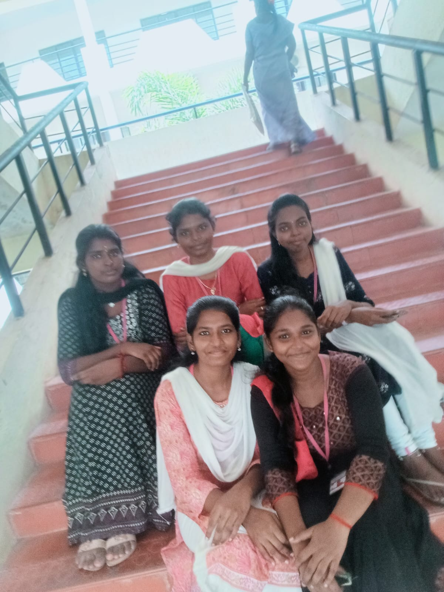
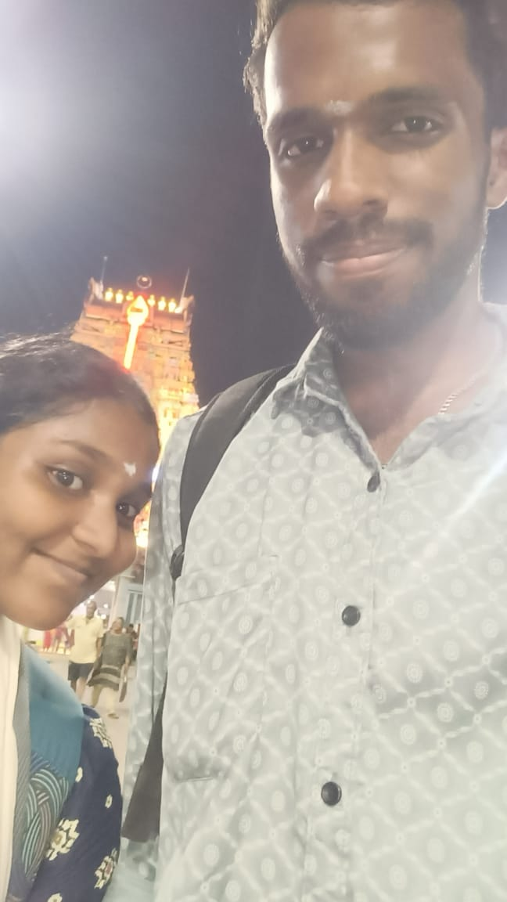

SARATHI'S COLLEGE LIFE
Sarathi college life:
sarathi's college life was very beautifull.she enhanced herself by learning new things.she was very brave and made many new friends
she made new friends and got four precious fantastic girls and created a fabulous memories with them.The five quuens are:
- MANJUTHANGAM
- JENIFER
- JAYASri
- ANUSUYA
They have different characters and thats what i like in them.Firstly when i talk about manju she is very close to me one of my best frd i will ever have in my life.hope we will see soon.missing you hardly manju aunty
when i talk about jeni she is very nermai yana ponu and helps others.where jayasri a girl with super active mind she cant stop talking and makes others kadupu more but her heart is meant to be most of the times a good one.
Lastly her comes the maranji fy girl anusuya .(we four dont know what she is doing) but a friendly one
I want to share our memeory here:

This picture were taken by us during the last day
When i think about second year that year thirupipotufied my life.so where i got my true love shathan manyu shivaji.He showed me what love looks like and how it should be showed to the other one.i have no word to describe him.He means a lot to me. Ican say bla bla about him but it is private and cant be shared(insert kanadikura emoji)
So here i want share our memories:

This pic were taken by us in vadapalani kovil that was our first anniversary
So third year were we manadaiya pithikified for our projects and all were worried to leave the clg.Apdinu la solamaten epoda clg mudichitu polamnu erundhurukum so ipdi solitey polam.....it cant be express through letters thats it
A BIG THANKYOU MY DEARS!